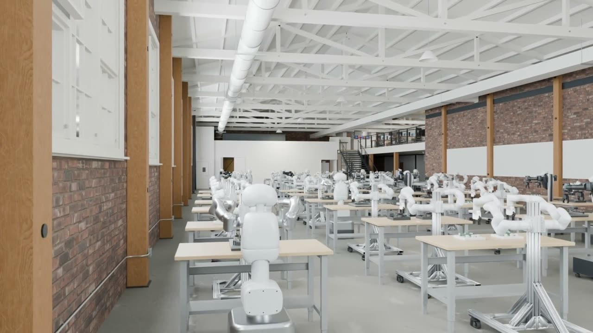
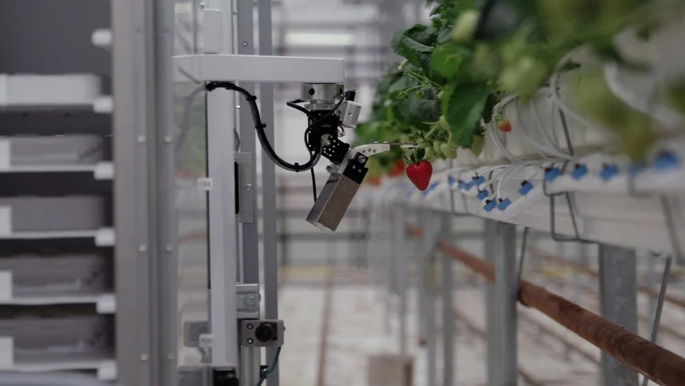
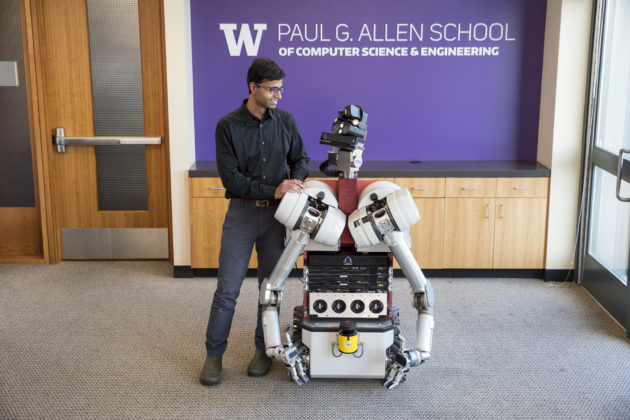
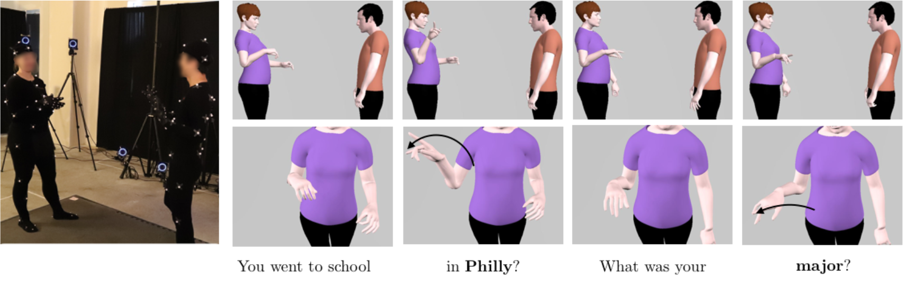
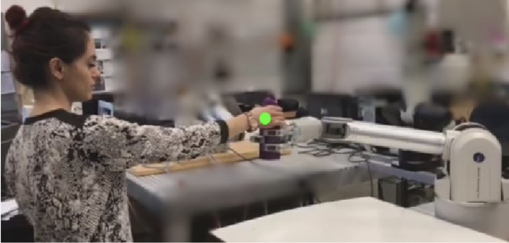
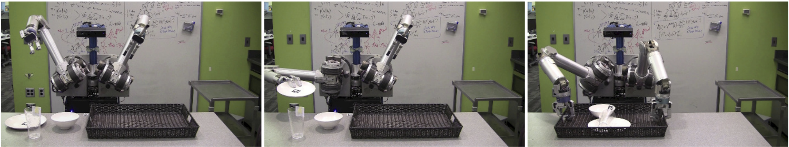
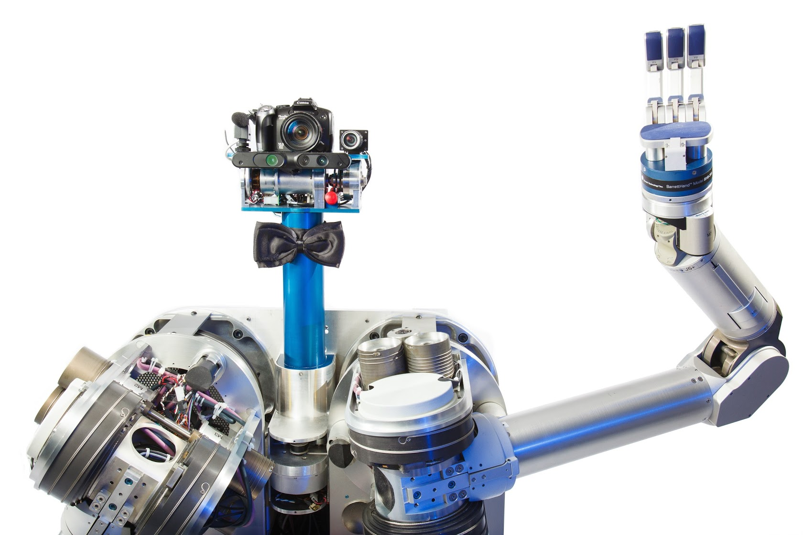

Projects
Current initiatives, robot learning research, and systems built for the real world.
Selected work

Real2Sim2Real Arena rendering Sim2World
I lead Sim2World, an open benchmarking initiative connecting simulation-based robot learning with real-world evaluation. We’re building a shared testing ground where researchers and industry teams can bring their own tasks, develop policies in simulation, and deploy them on physical robots.
Project page-
Getting Out and Getting Back: World and Behavior Grounding in Real2Sim2Real Co-Training
We study how aligning simulation with the real world and simulated trajectories with human behavior affects robot policy co-training. Our real2sim2real pipeline varies these two forms of grounding independently. On a dynamic dexterous pick-and-sort task, fully grounded co-training increases success from 52% to 86%.

Zordi — AI-powered agricultural robotics
I founded Zordi, where we built AI-powered robotic systems for agriculture, including harvesting, crop monitoring, and integrated greenhouse systems. Zordi was acquired by Industrial Next in 2026.
Earlier Research & Systems
-

Photo: UW / Dennis Wise, via GeekWire The Curious Minded Machine
Curiosity is widely recognized as a fundamental mode of cognition and is particularly critical during childhood development. Developing intelligent robots with a sense of "curiosity" may lead to an important breakthrough in artificial intelligence: agents that proactively expand their knowledge and capabilities by themselves through information-generation. We propose a principled Bayesian reinforcement learning (BRL) framework that incorporates a mathematically elegant way to model curiosity. We show that BRL yields naturally curious behaviors that benefit long-term task performance. I have been the main research scientist for BRL algorithms. This project is collaboration among University of Washington, CMU, University of Pennsylvania, MIT, and Honda Research Institute USA.
Papers: Bayesian Policy Optimization, Bayesian Residual Policy Optimization
Media appearance: GeekWire -
Scalable, Adaptive, and Resilient Autonomy (SARA)
SARA (Scalable, Adaptive, and Resilient Autonomy) is a collaboration with the U.S. Army Research Laboratory on autonomous navigation in complex off-road terrain. I coordinated the University of Washington team and integrated Generalized Lazy Search for fast motion planning. Patented technology from this work is now at Overland AI.
-
Food Manipulation for Assistive Feeding
Eating is an activity of daily living (ADL) and losing the ability to self-feed can be devastating. Eating free-form food is one of the most intricate manipulation tasks we perform everyday, demanding robust non-prehensile manipulation of a deformable hard-to-model target. Through this project, we develop algorithms and technologies towards a robotic system that can autonomously feed people with upper-extremity mobility limitations. I have co-implemented the system, designed and implemented bite-picking strategies.
-
MuSHR
Our goal is to democratize robotics with MuSHR, the Multi-agent System for non-Holonomic Racing. We are developing a low-cost racecar platform with open-source software, tutorials, and class assignments. We want anyone from high school students to Ph.D. researchers to be able to learn about and perform research in robotics. Each MuSHR racecar is fitted with a full-suspension base, IMU, NVIDIA Jetson TX2, YDLIDAR laser scanner, and Intel RealSense RGBD camera. We have over 20 racecars in our fleet. I have been mainly in charge of developing motion planners to be used in undergraduate coursework, setting up an optical motion capture system, and multi-car control.
-

Learning Human Gestures and Synthesizing Real-time Finger Motions
To work in uncertain environments with humans, robots must understand how humans behave and communicate. Human behavior involves the highly structured, multi-channel coordination of gaze, gesture, verbal and facial movements. To address the challenge of interpreting human gestures, we have collected a multimodal, wholistic dataset of people having social interaction captured with a motion capture system, which amounts to 16.2M frames. This is the largest dataset available. The statistical analysis verifies strong intraperson and interperson covariance of arm, hand, and speech features, potentially enabling new directions on data- driven social behavior analysis, prediction, and synthesis. We further demonstrate the use of this dataset to synthesize finger motions aligned with speech. I have been the lead developer on this project and the first author of the published ICCV 2019 paper.
-

Human-Robot Handover
Human-robot collaboration can enable humans to work on safe and less physically demanding tasks while robots take care of risky and heavy-payload tasks. In order for humans and robots to collaborate safely and swiftly, robots need to understand human intentions and act in a way that is predictable and legible from human perspective. We have proposed a unified generative model of human reaching motion that allows the robot to infer human intent and plan legible motions. Our study on human reaching motion reveals that elliptical motion model yields a good fit to empirical data. I have analyzed the collected user study data and implemented legible robot motions.
-

HERB performing a table-clearing task via sequential motion planning Multi-step Mobile Manipulation with Error-recovery
Household manipulation presents a challenge to robots because it requires perceiving a variety of objects, planning multi-step motions, and recovering from failure. In collaboration with Toyota Motor Engineering & Manufacturing North America, we have worked on practical practical techniques that improve performance in these areas by considering the complete system in the context of this specific domain. We validate these techniques on a table-clearing task that involves loading objects into a tray and transporting it. The results show that these techniques improve success rate and task completion time by incorporating expected real-world performance into the system design. I was in charge of error detection and recovery and empirical evaluation of the overall system.
-
AIKIDO
AIKIDO is a C++ library, complete with Python bindings, for solving robotic motion planning and decision making problems. This library is tightly integrated with DART for kinematic/dynamics calculations and OMPL for motion planning. AIKIDO optionally integrates with ROS for execution on real robots. AIKIDO is currently being used across multiple labs and projects including University of Washington, Carnegie Mellon University, University of Southern California, and Robotics Collaborative Technology Alliance (RCTA, sponsored by US Army Research Laboratory). I am one of the lead developer and maintainer of the library.
-

HERB
HERB, the Home Exploring Robot Butler, serves as the realistic testbed for all of our algorithms and as a focal point of our industry and academic collaborations. It is a bimanual mobile manipulator comprised of two Barrett WAM arms on a Neobotix base. It is equipped with a suite of image and range sensors, including the Carnegie Robotics MultiSense SL and Intel RealSense. I have been mainly in charge of designing the 3rd generation of HERB and maintaining its perception and control pipelines.
Media appearance: GeekWire